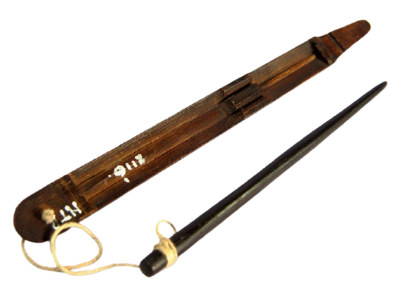

Papua

Gambar diatas adalah Pikon, Pikon dibuat meggunakan bambu, pada bagian betangahnya terdapat seutas tali yang diikat pada lidi penggetar. Pikon biasa digunakan oleh pria di Suku Dani. Cara memainkannya cukup dengan menarik lidi pada potongan penggetar tersebut.